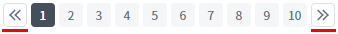
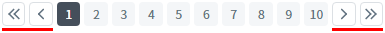

PageList의 'buttonShowType' 속성을 사용하여 페이지 번호의 좌우 기능 버튼의 유형을 비교하는 예제입니다.
속성의 설정에 따른 동작은 다음과 같습니다.
"0" : 이전 목록, 페이지 번호, 다음 목록
"1" : [default] 이전 목록, 이전 페이지, 페이지 번호, 다음 페이지, 다음 목록
"2" : 이전 페이지, 페이지 번호, 다음 페이지
"3" : 첫 페이지, 이전 목록, 페이지 번호, 다음 목록, 마지막 페이지
"4" : 첫 페이지, 이전 페이지, 페이지 번호, 다음 페이지, 마지막 페이지
'buttonShowType' 속성을 "0"으로 설정
'buttonShowType' 속성을 "1"로 설정
'buttonShowType' 속성을 "2"로 설정
'buttonShowType' 속성을 "3"으로 설정
'buttonShowType' 속성을 "4"로 설정
구성된 예제는 다음의 조건이 동일하게 설정되었습니다.
화면에 표시할 페이지 수(속성 'pageSize') : '10'
전체 페이지 수 : '52'
예제별 좌우 버튼을 화면에 표시(구성)하는 방법과 기능을 비교합니다.
1
STEP 1: 실행된 결과를 확인합니다.
예제 영역 'buttonShowType: 0'에 구성된 'PageList'를 확인합니다.
다음과 같이 버튼과 페이지 번호가 구성됩니다.
이전 목록, 페이지 번호, 다음 목록Image 1.브라우저(Chrome) 실행 예시

1
STEP 1: 실행된 결과를 확인합니다.
예제 영역 '(기본 설정) buttonShowType: 1'에 구성된 'PageList'를 확인합니다.
다음과 같이 버튼과 페이지 번호가 구성됩니다.
이전 목록, 이전 페이지, 페이지 번호, 다음 페이지, 다음 목록Image 2.브라우저(Chrome) 실행 예시

1
STEP 1: 실행된 결과를 확인합니다.
예제 영역 'buttonShowType: 2'에 구성된 'PageList'를 확인합니다.
다음과 같이 버튼과 페이지 번호가 구성됩니다.
이전 페이지, 페이지 번호, 다음 페이지Image 3.브라우저(Chrome) 실행 예시
1
STEP 1: 실행된 결과를 확인합니다.
예제 영역 'buttonShowType: 3'에 구성된 'PageList'를 확인합니다.
다음과 같이 버튼과 페이지 번호가 구성됩니다.
첫 페이지, 이전 목록, 페이지 번호, 다음 목록, 마지막 페이지Image 4.브라우저(Chrome) 실행 예시
1
STEP 1: 실행된 결과를 확인합니다.
예제 영역 'buttonShowType: 4'에 구성된 'PageList'를 확인합니다.
다음과 같이 버튼과 페이지 번호가 구성됩니다.
첫 페이지, 이전 페이지, 페이지 번호, 다음 페이지, 마지막 페이지Image 5.브라우저(Chrome) 실행 예시
1
속성을 정의합니다.
[필수] buttonShowType="옵션 값"
페이지 번호의 좌우 기능 버튼의 유형을 설정합니다.
(옵션 설명)
- "0" : 이전 목록, 페이지 번호, 다음 목록
- "1" : [default] 이전 목록, 이전 페이지, 페이지 번호, 다음 페이지, 다음 목록
- "2" : 이전 페이지, 페이지 번호, 다음 페이지
- "3" : 첫 페이지, 이전 목록, 페이지 번호, 다음 목록, 마지막 페이지
- "4" : 첫 페이지, 이전 페이지, 페이지 번호, 다음 페이지, 마지막 페이지
[선택] pageSize="화면에 표시할 페이지 번호의 개수"
기본 설정 값은 "10"입니다.
buttonShowType
pageSize